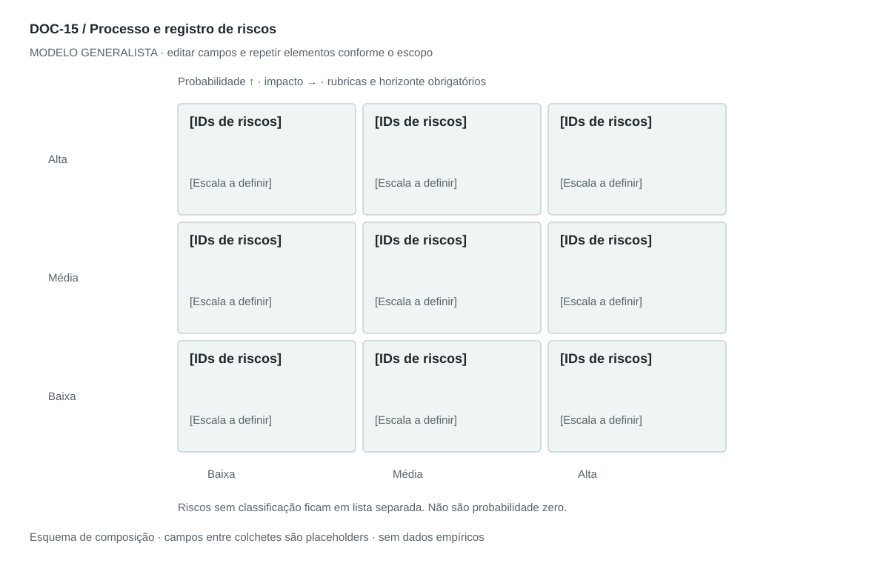

DOC-15 / Biblioteca documental generalista
Processo e registro de riscos
Identificar, avaliar, tratar e acompanhar incertezas que ameaçam objetivos, com responsáveis e resposta.
Modelo de investigação. Não representa uma análise concluída. Campos vazios devem permanecer identificados; não inventar dados para completar figuras.
Estrutura editorial
3–5 páginas: processo, rubrica, registro priorizado, respostas e RBS. Heatmap somente depois de definir escala e horizonte.
Visual previsto

Matriz probabilidade × impacto com IDs, rubricas e legenda; desconhecidos ficam fora da matriz. Árvore de categorias em anexo. Pontuação ordinal não é probabilidade estatística.
Imagens: Heatmap e árvore; ícones de alerta opcionais. Não gerar números de probabilidade ou perda para preencher o gráfico.
Dicionário de dados
| Campo | Tipo | Dado necessário |
|---|
| risco_id | referencia | Identificador único do risco |
| categoria | texto | Grupo e subgrupo da RBS |
| causa_evento_efeito | texto | Encadeamento específico do risco |
| probabilidade | enum | baixa, media, alta ou desconhecida com rubrica e horizonte |
| impacto | enum | baixo, medio, alto ou desconhecido com critério |
| resposta | texto | Evitar, reduzir, transferir, aceitar ou investigar |
| responsavel | referencia | Quem acompanha e atua |
| gatilho | texto | Sinal de acionamento da contingência |
| residual | texto | Exposição esperada após resposta |
| revisao | data | Próxima data de revisão ou null |
Todos os registros precisam de classificação, fonte, localização, datas, confiança e limitação. Números também precisam de unidade, moeda quando aplicável e período.
Modelo preenchível
Os quadros amarelos podem ser editados nesta página para impressão. Edições não são gravadas automaticamente: use o Markdown/JSON para manter uma versão ou imprima em PDF após editar.
[Negócio] · [Versão] · [Data-base] · [Autor] · [Audiência] · [Território]
Pergunta decisória: [A preencher]
Escopo: [A preencher]
1. Escopo e critérios
Objetivos protegidos, horizonte e rubricas de probabilidade e impacto.
[Análise + evidência + implicação + lacuna]
2. Processo
Identificar, avaliar, escolher resposta, atribuir responsável e revisar.
[Análise + evidência + implicação + lacuna]
3. Registro de riscos
Descreva causa → evento incerto → efeito; se o problema já ocorreu, registrar como incidente.
[Análise + evidência + implicação + lacuna]
4. Tratamento
Prevenção, contingência, custo, prazo, gatilho e dono.
[Análise + evidência + implicação + lacuna]
5. Risco residual e aceitação
Reavaliar após controles e indicar quem aceita a exposição.
[Análise + evidência + implicação + lacuna]
6. RBS e acompanhamento
Agrupar por categoria, sem substituir o registro operacional; cadência e sinais de alerta.
[Análise + evidência + implicação + lacuna]
Decisão e próximo passo
[Decisão e justificativa]
[Alternativa considerada]
[Condição de reversão]
[Ação, responsável, prazo e critério]
Fontes e limites
[Fonte + localização + datas + o que sustenta + limitações]
Critérios de revisão
- Nenhum risco prioritário fica sem dono ou resposta.
- Rubrica e horizonte acompanham a classificação.
- Risco residual só muda após justificar efeito do controle.
Estudo do arquivo original
DOC-15-fonte.pdf — Três páginas retrato. Primeiro explica identificação, avaliação, mitigação e monitoramento; depois catálogo com likelihood/impact/priority/description e RBS hierárquica de três níveis em imagens. O catálogo prioriza qualitativamente, mas não define rubrica visível nem responsável ou risco residual por linha.
Observação do original e adaptação recomendada são camadas distintas. Nomes, preços, localidades, contatos e conclusões do caso-fonte não devem preencher a nova análise.